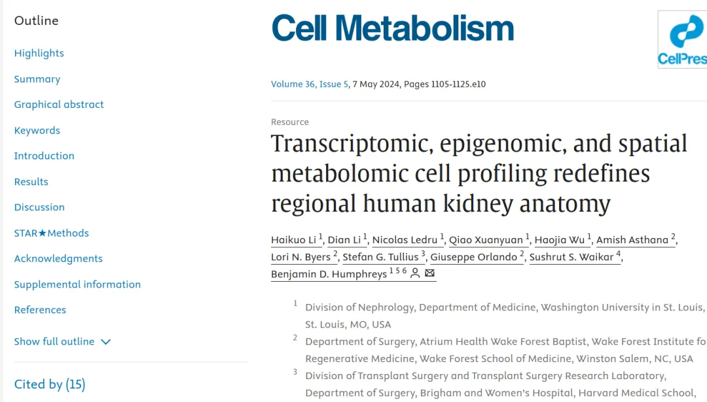
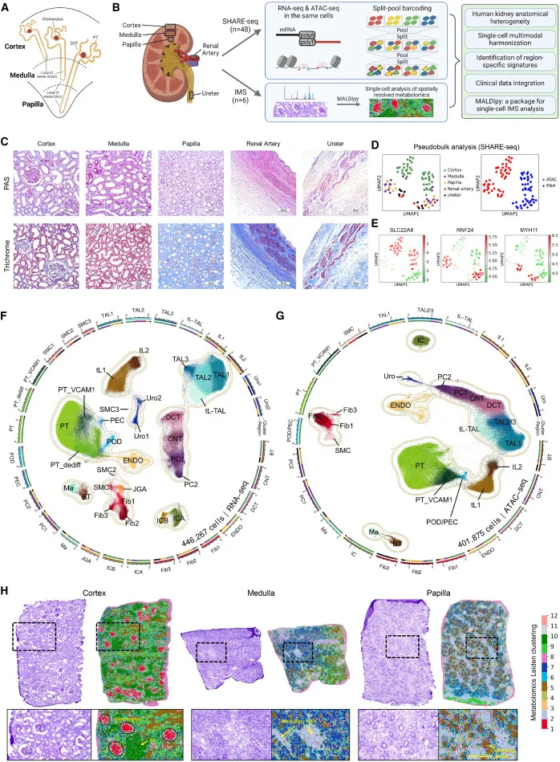
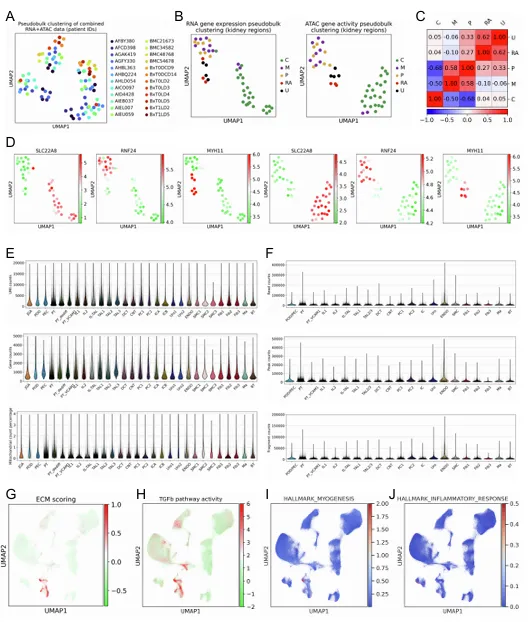
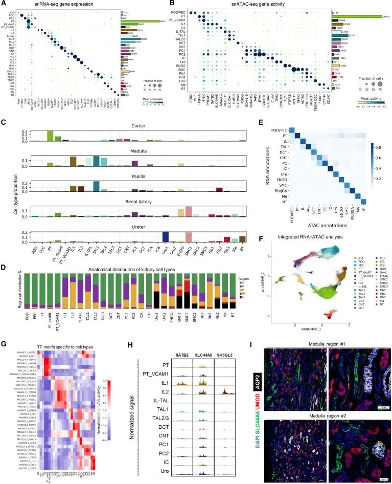
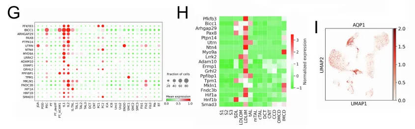
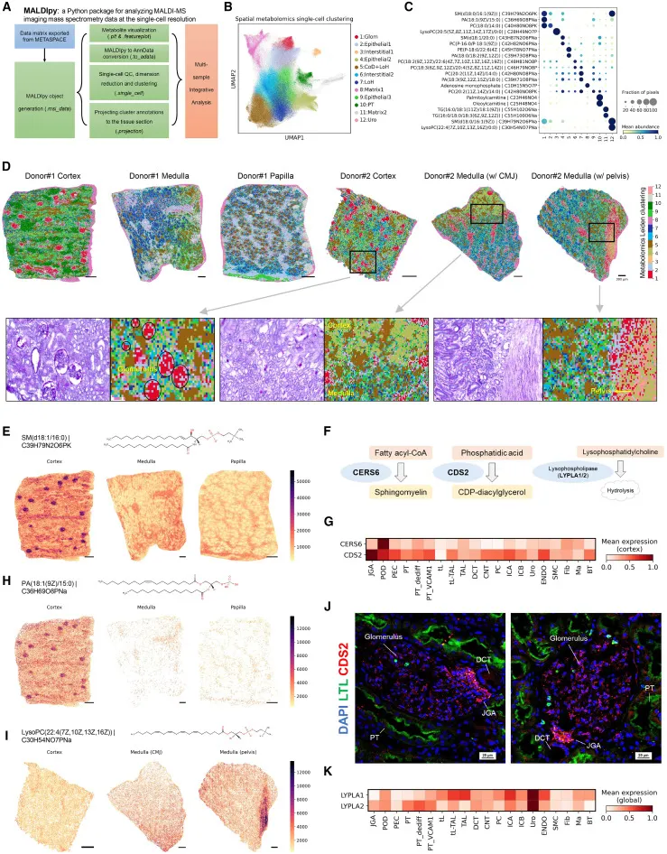
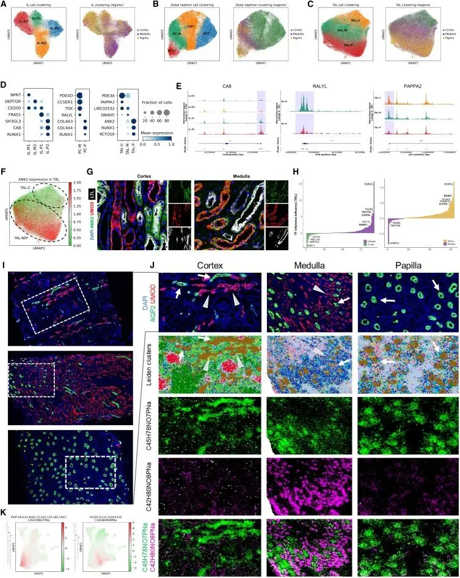
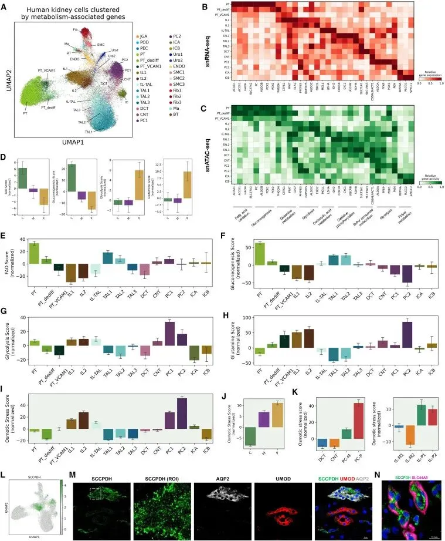
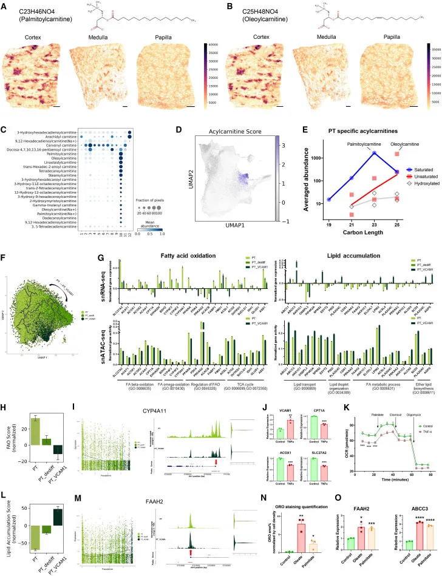
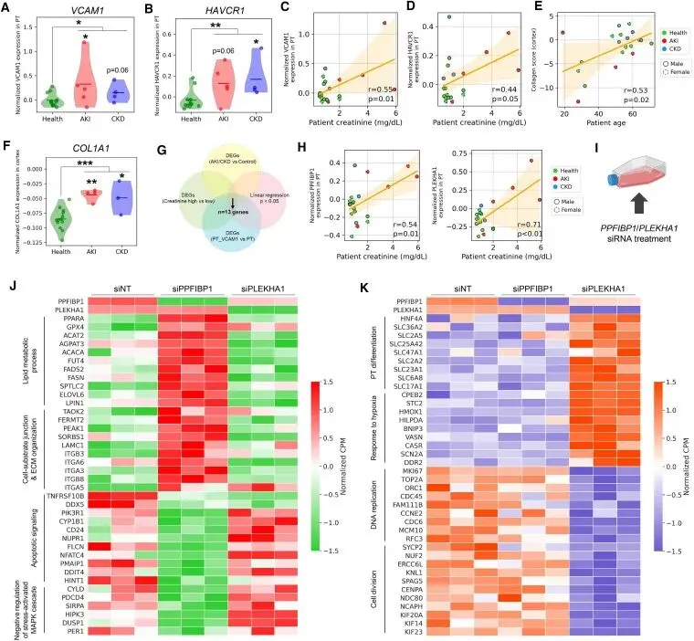

《Cell Metabolism》| 多组学联用挖掘肾脏致病基因
原文：https://mp.weixin.qq.com/s?__biz=MzAwMzIzOTk5OQ==&mid=2247528620&idx=1&sn=99b140e34b28eaaf8d4a61194e954adf&chksm=9b3c09fcac4b80ea7727ab9bc612a7e4a252e4f18147d7635168bf60d152a57f27d19e1cb4b5#rd 合集：单细胞教程全收录 / 空间转录组 / 文献速递
一、写在前面
这是一篇2024年五月的文章(原文链接：https://pubmed.ncbi.nlm.nih.gov/38513647/)，大规模的多组学肾脏区域图谱报道仍然较少，作者使用了同步高通量单细胞ATAC/RNA测序(high-throughput single-cell ATAC/RNA sequencing, SHARE-seq) 、空间代谢组学构建了来自54个人类 样本的肾脏区域解剖图谱(量大管饱)。本文的数据中共包含446267 个细胞的转录组以及401875 个细胞的染色质可及性图谱。

大佬就是大佬，作者团队开顺手开发了一个包用于分析408218 个空间代谢组元素单位的工具。利用这些数据，作者发现了thin limb、thick ascending limb loop of Henle、principal cell展现出不同的转录、染色质可及性、代谢组学特征。代谢组学与基因的表观图谱中，作者发现了肾小体单元的不同区域存在互相不包含的代谢特征 ，例如疾病状态下的肾脏近曲小管(proximal tubule, PT)细胞存在脂质代谢 的失调。作者从中发现PLEKHA1 可作为疾病的标志物并且在体外敲低这一基因提升了肾小管细胞的分化能力。总之，这是一篇单细胞联合空间组学的大作，为大家后续的文章设计以及数据挖掘提供了思路与数据(挖起来：http://humphreyslab.com/SingleCell/)。 文章中用到的scRNA-seq可参考： scRNA-seq数据基础分析手册(2025最新修订) scATAC分析可参考： scATAC分析学习手册 如果需要数据分析指导 、生信热点全文复现 、自测数据个性化分析 辅导，欢迎联系客服微信[Biomamba_zhushou]二、背景介绍
肾脏在人体中维持液体与电解质平衡，负责排除体内的垃圾、调控血压。人体的大约一百万个肾单元中的皮质一天能够过滤超过180L 的血浆。而世界上有10%的人受到肾脏疾病的困扰。肾单位的三种类型，皮质肾单位、短髓袢肾单位和长髓袢肾单位，这是根据U型袢（即亨利袢）弯曲的位置进行分类的，分别位于皮质、髓质和肾乳头(Figure 1A)。当然肾脏是具有高度异质性的，例如肾脏的小管上皮细胞中就具有ureteric bud、collecting ducts、metanephric mesenchyme等不同的结构。作者认为，虽然一些团队发表了一定规模的肾脏分析，但以解剖学角度 通过多组学分析解析肾脏的作品仍然匮乏。这里作者利用自己开发的开源工具MALDIpy 解析了来自六个成年人样本的皮质、髓质、肾乳头的质谱成像数据(Imaging mass spectrometry，IMS)。 通过多组学的研究，作者甚至识别到了一种较少被报道的细胞类型thin limb of loop of Henle (tL)细胞。此外，作者发现thick ascending limb loop Henle (TAL)与principal cells (PC)在不同的解剖学区域时会展现出不同的特征。尤其是PT会在疾病状态下发生脂质代谢 、脂肪酸氧化 、脂质蓄积 基因表达的变化。
三、主要结果
1、项目概况 作者对肾脏组织进行了SHARE-seq与IMS的组学实验流程(Figure 1A-B)，并通过PAS染色验证获得组织结构的正确性 (Figure 1C)。正如大家熟悉的那样，肾小球组织仅出现在皮质中，而肾小管组织则跨越皮质、髓质、肾乳头等多个解剖学区域存在，并分为许多亚群。平滑肌细胞则出现在肾动脉和输尿管中，展现出组织结构的弹性。作者分析的48例SHARE-seq样本的具体分配情况为24例皮质样本、10例髓质样本、7例肾乳头、3例肾动脉、4例输尿管样本。IMS样本则共有6例(Figure 1H)

Figure 1
2、SHARE-seq图谱解释肾脏解剖学异质性 作者首先优化了SHARE-seq的流程，采用高活性的Tn5转座酶 变体进行建库，原始获得的细胞数约50000/批次，且成本仅为10X Genomics multiome kit的(1/20)。为了检查数据质量，作者使用Pseudobulk分析处理数据并进行降维，可以看到，来源于不同组织、不同技术的样本能够自行聚成一类(Figure 1D)。即使把scRNA-seq的数据与snATAC-seq的数据分开进行这样的分析，结果仍然能够重现(Figure S1B)。结果显示肾脏的髓质与肾乳头之间的相似性相较于皮质更高(Figure S1C)。组织类型的marker类型方面，肾脏皮质高表达SLC22A8(编码肾小管中的转运体)、Loop of Henle以及远端的肾单元特异性表达RNF24、髓质与肾乳头表达MYH11(血管平滑肌细胞的marker)。在基本的过滤与双细胞去除(scRNA-Seq双细胞过滤手册)之后，snRNA-seq共剩余446267个细胞，这些细胞平均包含3084个独特分子识别标签(unique molecular identifiers, UMI)以及1051个基因(Figure 1F&S1E)。在snATAC数据中，共获得401875个细胞的数据，平均每个细胞包含4729个fragment与1866个peaks(Figure 1G&S1F)。snRNA-seq与scATAC分别被范围29、21个cluster。

Figure S1
大规模的队列不仅能够鉴定出此前大家都关注的细胞类型例如PTC中表达促纤维化 、促炎 的VCAM1_PT，也能够发现此前较少报道的tL、TAL亚群、PC亚群、成纤维细胞、SMCs细胞、尿路上皮细胞等(Figure 1F&G)。这些细胞类型的marker如Figure 2A与2B所示。这些细胞与肾脏疾病均存在一定关联：成纤维细胞与平滑肌细胞中高表达细胞外基质(extracellular matix，ECM)编码基因(Figure S1G)；成纤维细胞与内皮细胞中TGF-β 通路活性更高(Figure S1H)。在巨噬细胞中，与免疫相应相关的活性则更高。进一步的分析中，作者统计了各解剖区域的细胞组成，大部分结果与此前对肾脏的认知相符，大家可以检查一下自己手中的数据是否一致：
肾脏皮质中主要细胞类型为PT；肾小球、远曲小管(distal convoluted tubule, DCT)、连接管(connecting tubule. CNT)主要存在于皮质中(Figure 2D)。B型夹层细胞(B intercalated cells, ICA)广泛分布在肾脏的皮质、髓质、肾乳头组织中(Figure 2C-D)。loop of Henle细胞则主要分布在髓质与肾乳头区域。SMC主要富集于肾动脉与输尿管中，尿路上皮细胞多见于输尿管中。

Figure 23、tL细胞的多模态特征
上文中作者注释到了两种新型clusters_tL1与tL2(Figure 1F)，这两种cluster的差异基因富集到肾管发育 、肾单元导管上皮细胞分化调控 、上皮细胞增殖 等通路，即其为TECs。但它们并不表达UMOD(TAL)、AQP2(PC)这样的marker(Figure 2C)。似乎是皮质与髓质中形成U-shaped loop的thin limb of loop of Henle 。
严谨起见，作者挖掘了大鼠中包含tL部分组织的RNA-seq数据(GSE56743)，结果显示出高度的一致性(Figure S2G-H)。这两种细胞表达AQP1，即它们拥有DTL与ATL的特征。此外SATB2、SH3GL3、SLC44A5基因在tL中的表达量及染色质开放程度均更高(Figure 2A-B)。在这里，作者关注到了与磷脂代谢 相关的SLC44A5基因(表达于tL基底膜部位)能够与UMPD、AQP2在髓质部分共定位，这进一步证明了其tL身份(Figure 2I)。

Figure S2G-I
4、IMS构建肾脏解剖学图谱
作者使用的IMS为MALDI平台，即可以以10-μm的分辨率完成近似单细胞水平的分析。这批数据中，共获得了408218个空间单元，共包含588个特征数据。作者基于python语言开发的MALDIpy能够在单个像素水平以更快的速度、更低的内存站用户分析IMS数据(Figure 3A)，并且还能额外提供蛋白质与代谢物的关联。基于IMS数据，空间分辨率的代谢组一共被分为12个cluster(Figure 3B&C)，每种都拥有自己的特征代谢物，例如：cluster1鞘磷脂丰度较高、cluster10软脂基肉毒碱 、油酰肉碱 含量较高，这两种代谢物是脂肪酸β氧化的代谢中间物质，是PT细胞的特征。不同的解剖学区域展现出不同的代谢特征(Figure 3D)，作者结合这些特征代谢物的文献报道与PAS上展现出的结构特征，对cluster进行对应注释。此外，作者还利用转录组编码酶与对应的代谢物之间的交互辅助注释细胞，例如SM(d18:1/16:0)在肾小球区域聚集较多。CERS6可以将palmitoyl(C16:0)-coenzyme A生成神经酰胺，这就是一种SM的前提物质。在转录组的角度，CERS6基因可以特异性的在足细胞中表达(Figure 4G)，这样就可以辅助IMS数据中足细胞的注释。其它对应关系大家可以查看原文Figure 3与对应的描述。

Figure 3
5、相同的TEC类型在各区域位置展现出不同的转录与表观特性
上文说过，TEC中的tL、PC、TAL能够在不同的区域位置分层(Figure 1F&G)。例如TAL3细胞主要存在于皮质，TAL2细胞主要存在于髓质、TAL1细胞主要存在于肾乳头区域(Figure 2D)。而同样的TEC在不同的解剖区域展示出不同的表达转录组特征，例如tL(Figure 4A)、远端肾单元(Figure 4B)、TAL(Figure 4C)。它们当中的不同亚群会展示出不同的marker表达，例如 CD200 在tL-M1/2中表达量相较于tl-P1、tL-P2而言更高(Figure 4D)，这些基因的染色质可及性也展现出相同的变化(Figure 4E)。对于PC来说也有相似的现象(Figure 4D)，例如 COL3A3 、 COL4A4 在人类基因组中相连，这两个基因的启动子染色质可及性和表达量均在PC-P中较PC-M更高，而 RALYL 的染色质可及性趋势则相反(Figure 4E)。利用相同的逻辑，作者对TAL亚群也进行了分析(Figure 4F&G)。
此外，作者还检测了肾脏区域特异性的TFs，其中RUNX1在任意TEC中的皮质乳头区域表达量均上升(Figure 4D)。在对应的调控网络计算中，也能得到一致的结果(Figure 4H)。

Figure 46、皮质与髓质中的TAL具有不同的代谢图谱
作者在免疫荧光中共染了UMOD与AQP2，结果显示无论在哪个区域，AQP2阳性细胞几乎在IMS中全是cluster5，表面PC在不同的区域中具有相似的代谢特征，而UMOD阳性的TAL主要被鉴定为cluster7(Figure 4J)。单纯从IMS角度来看， phosphatidylethanolamine PE(P-18:0/22:6)可以作为cluster5的marker，而phosphatidylcholine PC(20:2/14:0)可以作为cluster7的marker(Figure 4K)。而TAL在皮质中C45H78NO7PNa(phosphatidylethanolamine PE(P-18:0/22:6))的丰度较高(Figure 4J)。
7、肾单元不同部分之间的代谢相关基因图谱具有异质性
作者利用Reactome 数据库找到了2111个代谢 相关基因(默认流程是以高变基因进行下游聚类分群)并利用这些基因进行分群(Figure 5A)。可以看出，利用这些代谢相关基因即可将各种细胞类型区分开来。各个细胞类型也可以拥有自己的"代谢marker"(Figure 5B)，例如PT细胞与糖原生成 相关的基因(ALDOB、PCK1/2)表达量上升(这其实就是高中课本中说的肾脏能够承担糖异生功能的原因)。除了表达量外，这些代谢相关基因的染色质开放程度也呈现出一致的趋势(Figure 5C)。PTC中的FAO(Figure 5E)与而糖异生(Figure 5F)相关酶的增加可能与肾乳头组织中糖酵解、谷氨酰胺代谢增加有关。另一方面tL与PC主要分布在肾髓质与肾乳头中，展现出了较低的糖异生(Figure 5G)评分，但是糖酵解和谷氨酰胺代谢水平较高(Figure 5H)。接着，作者考察了一个比较有趣的指标——渗透压力。这一评分在髓质和乳头的值大于皮质(Figure 5J)，在亚群中则是PC-P高于PC-M；papillary tL高于髓质的tL(Figure 5K)。

Figure 5 8、PT细胞中的脂质代谢脂质代谢在PT中具有较高的活性，但是在肾脏损伤时会随之下降；但其表观变化相关研究仍较少。在IMS数据中，作者鉴定出cluster10的长链酰基肉碱(LCACs)如palmitoylcarnitine、oleoylcarnitine的丰度较高，可以认为是PT代谢模式。LCACs能够作为长链酰基辅酶A从胞浆转移至线粒体外膜的载体，因此被认为是FAO的指标。作者检测了23种LCACs并且发现他们当中的大部分在PT cluster中积累 (Figure 6C)。其中18种LCAC的碳链长度在19到25之间并且能被分为饱和、不饱和、羟基化LCAC(Figure 6E)。在参与肾脏损伤的PT_VCAM1与PT_dediff细胞中，FAO、β氧化、ω氧化相关基因表达(Figure 6G)与染色质可及性(Figure 6I)相较于PT显著下降。在PT_VCAM1的FAO活性最低(Figure 6H)。
TNF-α的治疗可以诱导VCAM1在PT中的上调，作者给予hTERT-reanal PT epithlial cell(RPTECs)以TNF-α，这显著提升了NFKB1、RELB、VCAM1、HAVCR1的表达。有趣的是，在这个过程中FAO基因例如CPT1A、ACOX1、SLC27A2随之降低(Figure 6J)。于是作者测量了实时氧消耗率(OCR)与细胞外酸性物质率，结果发现OCR比基线明显降低(Figure 6K)，这进一步证明了FAO活性的降低。FAO活性降低自然而然会带来PT中的脂质蓄积 ，在富集分析中脂质转运、脂滴定位、脂质生成、脂质蓄积相关的生物学通路在PT_dediff与PT_VCAM1中被激活，染色质可及性也展现出相同的趋势(Figure 6G&L)。作者给予RPTECs以BSA-oleate/palmitate fatty acids，并通过洋红染色观察到脂质的蓄积(Figure 6N)；这时能看到明显的FAAH2与ABCC3的表达量上升(Figure 6O)。

Figure 6 9、整合临床数据鉴定新的致病基因作者在临床数据中验证出PT肾脏损伤的maker——HAVCR1、VCAM1、TNIK在临床CKD、AKI样本中上升，而分化marker HNF4A则呈现出下降的趋势(Figure 7A&B)。而HVCRA1、VCAM1则与病人的尿肌酐水平呈正相关(Figure 7C&D)。胶原基因也在CKD与AKI样本中上升(Figure 1F)。作者依据差异表达以及与肌酐的相关性筛选出了13种潜在致病基因，其中Liprin-β1、PLEKHA1是与肌酐呈相关性且被报道与肾脏疾病(CKD、DN、肾小球硬化、狼疮性肾炎)中上调(Figure 7H)。为了进一步验证这两个基因的作用，作者在题为使用siRNA敲低了RPTECs中的这两个基因并进行Bulk RNA-seq，发现siPLEKHA1可以降低PPFIBP1 26%的表达量(Figure 7K)。si PPFIBP1处理产生的上调DEGs主要富集在脂质代谢 、ECM、凋亡信号、应激信号通路负调控等通路中(Figure 7J)。siPLEKHA1 处理的下调差异基因与细胞增殖、细胞周期调控、细胞分裂、缺氧 相应相关(Figure 7K)。

Figure 7四、最后聊聊
在肾脏临床研究中，大部分的样本都来源于皮质(获取髓质部分对患者伤害更大，样本难以收集)，而本文的作者则几乎 收集全了各区域(不过按照作者的说法还少了renal vein,、major and minor calyx、capsule)的肾脏组织类型并完成了大队列的多组学研究。也几乎是首次同时完成 了单细胞转录组、表观、空间代谢组学在肾脏疾病中的研究。整篇文章的工作体量巨大，除了组学外还有细胞培养、siRNA、脂质染色、免疫荧光、次生代谢物检测等多种实验技术，可谓是干湿结合 给大家上了盘管饱的大菜。但是这篇文章也有以下让人头疼的点：1、introduction把文章摘要中的内容几乎是重复 了一遍，Results前几段描述写的又很像Methods2、基础数据信息描述过于冗余 ，有些跑马灯，大量基础描述似乎应该放在methods中。3、行文思路 似乎不是很清晰，一些段落以生物问题为框架，一些段落则以技术类型为框架。4、Figure中的文字太小 ，得用列文虎克式看法。5、文章中，尤其是result部分，经常车轱辘话 来回说。

如何联系我们

 留一个领取资料、免费两周学习版服务器的微信号[Biomamba_zhushou]，方便各位随时交流。同时我们也构建了交流群矩阵，欢迎大家入群讨论。
留一个领取资料、免费两周学习版服务器的微信号[Biomamba_zhushou]，方便各位随时交流。同时我们也构建了交流群矩阵，欢迎大家入群讨论。
大家可以阅读完这几篇之后添加给生信入门初学者的小贴士 如何搜索公众号过往发布内容
已有生信基地联系方式的同学无需重复添加

 您点的每个赞和在看，我都认真当成了喜欢
您点的每个赞和在看，我都认真当成了喜欢